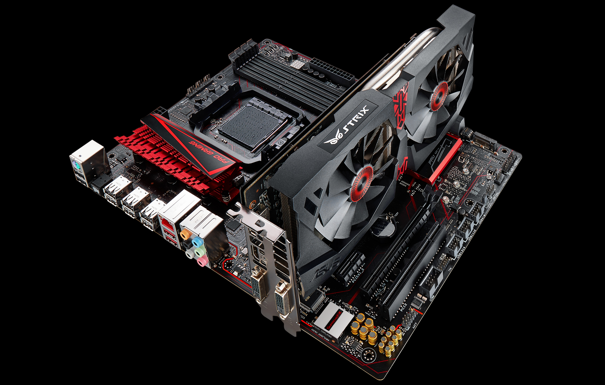

Это комплектующие компьютера, которые находятся внутри самого компьютера (в корпусе). Являются самыми важными в работе компьютера.
1. Материнская плата
- Основа компьютера, на которой размещаются все остальные компоненты
- Содержит разъёмы для подключения USB-устройств, клавиатуры, мыши, монитора
- Определяет размер системного блока
- Обеспечивает взаимодействие между всеми компонентами
2. Центральный процессор (CPU)
- "Мозг" компьютера, отвечающий за все вычисления
- Устанавливается в специальный разъём (сокет) на материнской плате
- Производительность зависит от количества ядер и частоты работы
- Требует обязательной системы охлаждения из-за сильного нагрева
3. Оперативная память (RAM)
- Временное хранилище данных для текущего использования
- Устанавливается в специальные слоты на материнской плате
- Чем больше объём, тем лучше многозадачность компьютера
- При отключении питания данные стираются
4. Жёсткий диск (HDD/SSD)
- Предназначен для длительного хранения данных
- HDD - классический магнитный диск с большой ёмкостью
- SSD - твердотельный накопитель с высокой скоростью работы
- Хранит операционную систему, программы и файлы пользователя
5. Блок питания (PSU)
- Преобразует электричество из сети в нужный формат для компонентов
- Имеет систему охлаждения для защиты от перегрева
- Распределяет питание по всем компонентам через специальные кабели
- Имеет различные выходные напряжения (12В, 5В, 3В)
6. Видеоадаптер (GPU)
- Отвечает за обработку графики и вывод изображения на монитор
- Может быть встроенной или дискретной
- Важен для игр и работы с графикой
- Часто имеет собственную систему охлаждения
7. Система охлаждения
- Включает радиаторы и вентиляторы
- Отводит тепло от процессора и других нагретых компонентов
- Поддерживает оптимальную температуру работы
- Требует регулярной очистки от пыли
8. Сетевая и звуковая карты
- Сетевая карта обеспечивает подключение к интернету
- Звуковая карта отвечает за обработку звука
- Часто встроены в материнскую плату
- Могут быть отдельными картами для улучшения качества
Все эти компоненты работают вместе, обеспечивая нормальную работу компьютера. Производительность системы зависит от баланса между всеми компонентами. Например:
- Для игр важны мощный процессор, видеокарта и большой объём RAM
- Для работы с видео нужен сильный процессор и много оперативной памяти
- Для быстрой загрузки системы важен быстрый SSD-накопитель
При выборе комплектующих важно учитывать их совместимость друг с другом и предполагаемые задачи компьютера.